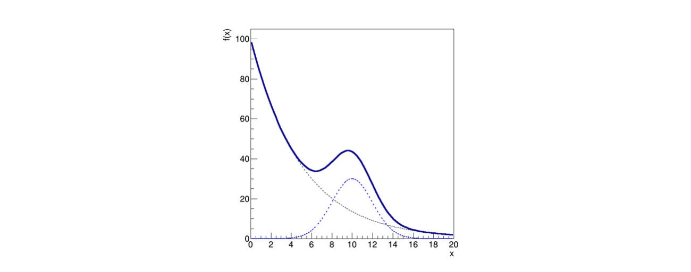

Lezione 11: fit di distribuzioni binnate con ROOT¶
Indice¶

11.1 Introduzione¶
I metodi dei minimi quadrati e della massima verosimiglianza possono essere applicati anche al caso di istrogrammi, cioè di distribuzioni binnate, dove si voglia fittare una funzione alla distribuzione dei conteggi nei bin:
In questo caso, il contenuto di ogni bin è un numero di eventi ni
Se il numero di bin e il numero medio di eventi in ciascuno di essi non è piccolo, si può assumere che la variabile casuale ni segua una statistica di Poisson

11.1.1 L’applicazione del metodo dei minimi quadrati¶
Nel caso dei minimi quadrati, la funzione Q2(θ) è solitamente la seguente (formulazione di Neyman):

Il valore di yi della lezione scorsa è costituito da ni
L’incertezza su ni è data dalla sua radice quadrata, secondo la statistica di Poisson
Il valore di xi è il centro del bin corrispondente
Il numero di bin dell’istogramma è N
11.1.2 L’applicazione del metodo della massima verosimiglianza¶
Nel caso della massima verosimiglianza, si assume che in ogni bin i conteggi seguano una distribuzione di probabilità Poissoniana con valore atteso μ = f(xi, θ):

11.1.3 La scelta fra le due tecniche¶
Nel caso di pochi conteggi presenti nei bin,
bin senza conteggi non contribuiscono al fit nel caso dei minimi quadrati, nonostante l’assenza di eventi sia un’informazione importante
consigliato utilizzare il metodo della massima verosimiglianza
Nel caso di molti conteggi presenti nei bin, i due metodi sono equivalenti e spesso il metodo dei minimi quadrati è computazionalmente più semplice
11.2 Un esercizio di regressione¶
Supponiamo di raccogliere eventi lungo una variabile x e di voler determinare i parametri della distribuzione di probabilità della variabile
Assumiamo che questo modello abbia una forma data da una distribuzione di fondo esponenziale sommata ad una di segnale gaussiana:

Graficamente, il modello ha un andamento descrescente che risale quando il termine Gaussiano diventa imporante, come mostrato in figura: 
la linea continua mostra il modello totale
mentre le due linee tratteggiate mostrano i due termini della somma, che si possono pensare come un picco di segnale sovrapposto ad un fondo lentamente decrescente
11.2.1 La lettura dei dati¶
Supponiamo di aver raccolto 10,000 eventi, che si trovano salvati nel file dati.txt
Quando si visualizzano gli eventi in un istogramma, siccome si tratta di un esperimento di conteggio il contenuto di ogni bin fluttua in maniera stocastica:

Nel caso di 10,000 eventi le fluttuazioni relative sono molto più accentuate del caso con 10,000,000 di eventi, come ci si aspetta
11.2.2 La determinazione dei parametri¶
Per determinare i parametri θ si utilizza tipicamente il metodo dei minimi quadrati o della massima verosimiglianza
In entrambi i casi, bisogna trovare l’estremante di una funzione
con molti parametri
in presenza di fluttuazioni statistiche
In questa lezione si ricorrerà agli algoritmi disponibili in
ROOTper poter trattare un problema sofisticato
11.2.3 Il fit di un istogramma in ROOT¶
Per poter effettuare il fit, è necessario definire il modello funzionale nel linguaggio di
ROOTUna funzione si rappresenta con un oggetto di tipo
TF1:TF1 segnale ("segnale", "gaus(0)", 0., 20.) ; segnale.SetParameter (0, p2) ; segnale.SetParameter (1, p3) ; segnale.SetParameter (2, p4) ;
In questo caso, la funzione sfrutta l’implementazione interna di
ROOTdella GaussianaLa funzione è definita sull’intervallo
0., 20.La
gausha tre parametri, perché per fittare un istogramma non normalizzato anche l’integrale della funzione è un parametro liberoL’indice del primo parametro è
0, come indicato fra parentesi ingaus(0)Il metodo
TF1::SetParameterpermette di assegnare valori ai parametri
11.2.4 Il fondo ed il modello completo¶
Analogamente, la distribuzione di probabilità del rumore di fondo è:
TF1 fondo ("fondo", "expo(0)", 0., 20.) ;
Il modello totale, indipendente dai primi due, è:
TF1 model ("model", "expo(0) + gaus(2)", 0., 20.) ;
In questo caso, l’indice dei parametri della Gaussiana inizia da
2
11.2.5 Il fit del modello ai dati¶
L’operazione di fit viene effettuata con il seguente comando, che invoca il metodo dei minimi quadrati:
TFitResultPtr fit_result = h_eventi.Fit ("model", "S") ;
Dopo il fit, la funzione con nome
"model"ha i propri parametri adattati all’istogrammaL’oggetto
TFitResultPtrcontiene i risultati del fitDifficilmente il fit ha successo autonomamente, perché a causa del gran numero di parametri θ e delle fluttuazioni stocastiche del contenuto dei bin il programma non riesce a trovare il minimo giusto della funzione Q2
11.2.6 Come aiutare ROOT a trovare il minimo giusto¶
Per facilitare il fit, è molto efficace dare a
ROOTun punto di partenza non distante dal risultato finale, basandosi sulla conoscenza del problema:I parametri θ0 e θ2 sono l’integrale delle due funzioni di segale e fondo, quindi sono legati all’integrale dell’istogramma:
double N_bkg = v_eventi.size () / 2. ; double p0 = log (N_bkg) ; // eventi di fondo double p2 = v_eventi.size () / 2. ; // eventi di segnale model.SetParameter (0, p0) ; model.SetParameter (1, p1) ;
L’esponenziale è sicuramente decrescente:
double p1 = -0.5 ; // pendenza del fondo
Il massimo della Gaussiana si trova circa a metà dell’intervallo:
double p3 = 0.5 * (max - min) ; // media del segnale
La larghezza della Gaussiana è per un certo livello correlata alla sigma dell’istogramma:
double p4 = h_eventi.GetRMS () ; // sigma del segnale
11.2.7 Come maneggiare meno parametri alla volta¶
Talvolta anche partendo da valori ragionevoli dei parametri il fit non converge all’estremante cercato
In questo caso, può essere d’aiuto identificare una regione dello spettro di x dove soltanto un sottoinsieme dei parametri è rilevante

11.2.8 I parametri dell’esponenziale dalla regione esponenziale¶
Un fit parziale soltanto sull’intervallo
0., 4.con la dsitribuzione di probabilità del solo fondo permette di calcolare una stima preliminare di θ0 e θ1TF1 fondo ("fondo", "expo(0)", 0., 20.) ; fondo.SetParameter (0, p0) ; fondo.SetParameter (1, p1) ; h_eventi.Fit ("fondo", "Q", "", 0., 4.) ;
L’opzione
"Q"fa in modo che nulla venga scritto a schermo
Un fit parziale soltanto sull’intervallo
7., 14.con la dsitribuzione di probabilità del solo segnale permette di calcolare una stima preliminare di θ0 e θ1TF1 segnale ("segnale", "gaus(0)", 0., 20.) ; segnale.SetParameter (0, p2) ; segnale.SetParameter (1, p3) ; segnale.SetParameter (2, p4) ; h_eventi.Fit ("segnale", "Q", "", 7., 14.) ;
11.2.9 Il fit finale¶
Dopo aver impostato i parametri iniziali della funzione
"model"con i valori ricavati in precedenza, si effettua il fit finale:model.SetParameter (0, fondo.GetParameter (0)) ; model.SetParameter (1, fondo.GetParameter (1)) ; model.SetParameter (2, segnale.GetParameter (0)) ; model.SetParameter (3, segnale.GetParameter (1)) ; model.SetParameter (4, segnale.GetParameter (2)) ; TFitResultPtr fit_result = h_eventi.Fit ("model", "S") ;
L’opzione
"S"garantisce che il risultato del fit venga salvato e sia accessibile tramite l’oggettofit_result
11.3 L’analisi del risultato della regressione¶
La funzione di fit viene automaticamente aggiunta alla proprietà del
TH1Fe visualizzata quando viene invocato il metodoTH1F::Draw:
11.3.1 La stampa a schermo del risultato¶
L’output a schermo del fit ha la forma seguente:
FCN=43.2314 FROM MIGRAD STATUS=CONVERGED 136 CALLS 137 TOTAL EDM=1.23203e-07 STRATEGY= 1 ERROR MATRIX UNCERTAINTY 5.6 per cent EXT PARAMETER STEP FIRST NO. NAME VALUE ERROR SIZE DERIVATIVE 1 p0 6.42014e+00 1.80871e-02 1.13175e-05 2.97351e-03 2 p1 -1.96538e-01 4.53819e-03 5.31592e-06 1.27147e-01 3 p2 1.76316e+02 6.42286e+00 1.74578e-02 -3.17192e-05 4 p3 9.97488e+00 7.97750e-02 -1.12275e-04 1.19307e-03 5 p4 2.08229e+00 8.35661e-02 -1.64878e-04 1.22967e-04
In questo caso, l’algoritmo di minimizzazione utilizzato è
MIGRADL’algoritmo ha avuto successo:
STATUS=CONVERGEDI valori dei singoli parametri e della loro incertezza sono riportati a schermo
Le singole informazioni si possono recuperare anche dentro il codice sorgente
11.3.2 La convergenza del fit¶
Per conoscere il successo dell’algoritmo numerico, si utilizza il metodo
TFitResult::IsValid (), che deve esseretruein caso di successo, oppure il metodoTFitResult::Status (), che deve essere0in caso di successocout << "primo feedback sul risultato del fit: " << fit_result->IsValid () << endl ; cout << "primo feedback sul risultato del fit: " << fit_result->Status () << endl ;
La classe
TFitResultPtrsi comporta come un puntatore ad oggetti di tipoTFitResult
11.3.3 Il valore dei parametri e la loro incertezza¶
Il valore dei parametri e della loro incertezza possono essere ottenuti dalla funzione di fit:
cout.precision (3) ; // stampa soltanto tre cifre significative cout << "eventi di fondo: " << exp (model.GetParameter (0)) << "\t+- " << model.GetParError (0) * exp (model.GetParameter (0)) << endl ; cout << "pendenza del fondo: " << model.GetParameter (1) << "\t+- " << model.GetParError (1) << endl ; cout << "eventi di segnale: " << model.GetParameter (2) << "\t+- " << model.GetParError (2) << endl ; cout << "media del segnale: " << model.GetParameter (3) << "\t+- " << model.GetParError (3) << endl ; cout << "sigma del segnale: " << model.GetParameter (4) << "\t+- " << model.GetParError (4) << endl ;
11.3.4 La bontà del fit¶
Nel caso in cui la distribuzione di densità di probabilità dei singoli ni sia Gaussiana, Q2min segue la distribuzione del Χ2 con N-k gradi di libertà, con N il numero di bin fittati e k il numero di parametri determinati
E’ necessario che per ogni bin ci siano abbastanza eventi, per cui la distribuzione di Poisson sia simile ad una Gaussiana
In queste condizioni si può utilizzare il test del Χ2 per determinare la bontà del fit calcolando la probabilità che il risultato possa essere peggiore di quello ottenuto, integrando la distribuzione di Χ2(N-k) da Q2min all’infinito. L’integrale si può ottenere in due modi:
cout << "probabilità associata a Q2: " << model.GetProb () << endl ; cout << "probabilità associata a Q2: " << fit_result->Prob () << endl ;
Più alto è l’integrale, più si è fiduciosi del fit
Si possono anche ottenere il valore di Q2min e del numero di gradi di libertà dalla variabile
fit_resultcout << "Valore di Q2: " << fit_result->Chi2 () << endl ; cout << "Numero di gradi di libertà: " << fit_result->Ndf () << endl ;
11.3.5 La matrice di covarianza dei parametri risultanti¶
La matrice di covarianza e di correlazione dei parametri risultati può essere stampata a schermo:
fit_result->PrintCovMatrix (cout) ;
I singoli valori sono accessibili tramite un oggetto di tipo
TMatrixDSym(una matrice simmetrica), che si ottiene sempre dall’oggettofit_result:TMatrixDSym cov = fit_result->GetCovarianceMatrix () ; // or TMatrixDSym cov = r->GetCorrelationMatrix(); for (int i = 0; i < cov.GetNrows () ; ++i) { for (int j = 0; j < cov.GetNcols () ; ++j) { cout << cov(i,j) << "\t" ; } cout << "\n"; }
11.4 Minimi quadrati (MQ) e massima verosimiglianza (ML)¶
Il metodo dei minimi quadrati (MQ) e quello della massima verosimiglianza (ML, da maximum likelihood) sono stimatori dei parametri di un modello, a partire dai dati
I due stimatori godono di proprietà diverse ed hanno comportamenti differenti: pur utilizzando gli stessi dati, possono produrre risultati differenti
11.4.1 Il fit di massima verosimiglianza in ROOT¶
Per svolgere un fit con il metodo della massima verosimiglianza, è sufficiente aggiungere l’opzione
"L"all’istruzione di fit:// fit con i minimi quadrati TFitResultPtr fit_result_MQ = h_eventi.Fit ("model", "SQ+") ; // fit con la massima verosimiglianza TFitResultPtr fit_result_ML = h_eventi.Fit ("model", "SLQ+") ;
L’oggetto di tipo
TFitResultPtrprodotto nei due casi contiene le stesse variabiliAnche nel caso della massima verosimiglianza viene calcolato il valore di Q2min, per poter effettuare il test del Χ2
11.4.2 Il confronto fra due risultati¶
Per un grande numero di eventi, i due stimatori si equivalgono
Per un numero ridotto di eventi, invece, lo stimatore di massima verosimiglianza considera propriamente anche i bin vuoti e attribuisce più importanza alle code delle distribuzioni
11.4.3 Il disegno del risultato¶
L’opzione
"+"nell’istruzione di fit impone aROOTdi salvare nell’oggettoTH1Funa copia della funzione utilizzata pr effettuare il fit.La funzione può essere recuperata con il metodo
TH1F::GetFunction// fit con i minimi quadrati TFitResultPtr fit_result_MQ = h_eventi.Fit ("model", "SQ+") ; h_eventi.GetFunction ("model")->SetLineColor (kRed) ;
Siccome il modello è sempre il medesimo,
TH1F::GetFunctionpuò generare ambiguità; la lista delle funzioni associate ad unTH1Fsi può ottenere anche con il metodoTH1F::GetListOfFunctions()
11.5 Sulla scelta del binning¶
Siccome la scelta del binning determina il numero ed il valore dei punti ni, essa ha impatto sul risultato del fit
Scegliere bin con dimensioni molto piccole (e quindi un gran numero di bin)
rende distorto il metodo dei minimi quadrati, per via della possibile presenza di bin vuoti
rende inaffidabile il test del Χ2 per la bontà del fit
Scegliere bin con dimensioni molto grandi riduce la sensibilità degli stimatori, perché peggiora la risoluzione con la quale gli stimatori hanno accesso ai dati
Si può utilizzare il test del Χ2 per deteminare la scelta del binning ottimale